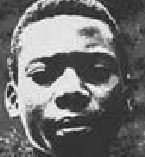

Young Inspirational Saints of the Catholic Church
| NAME | AGE | DATES | LOCATION |

|
Servant of God
Carlo Acutis |
15 | 1991-2006 | Milan, Italy | |

|
Bl. Chiara Badano | 18 | 1971-1990 | Sassello, Italy | |||||

|
Bl Laura Vicuna | 12 | 1891-1904 | Santiago, Chile / Argentina | |||||

|
Bl. Daniela Zanetta | 23 | 1962-1986 | Maggiora (Novara, Italy) | |||||

|
Ven. Anne Guigne | 11 | 1911-1922 | Cannes, Alpes-Maritimes, France | |||||

|
St. Theresa of the Andes | 19 | 1900-1920 | The Andes, Valparaiso, Chile | |||||

|
St. Kateri Tekakwitha | 24 | 1656 -1680 | Kahnawake (near Montreal), Quebec, Canada | |||||

|
Bl. Pier Giorgio Frassati | 24 | 1901-1925 | Italy | |||||

|
St. Therese of Lisieux | 24 | 1873-1897 | Lisieux, France | |||||

|
St. Gemma Galgani | 25 | 1878-1903 | Lucca, Italy | |||||

|
St. Joan of Arc | 19 | 1412-1431 | Rouen, Normandy, France | |||||

|
St. Dominic Savio | 14 | 1842-1857 | Piedmont, Italy | |||||

|
Bl Immelda Lambertini | 11 | 1322-1333 | Bologna, Italy | |||||

|
|
10 9 |
1908-1919 1910-1920 |
Fatima, Portugal | |||||
|  | Bl. Isidore Bakanja | 22 | 1887 -1909 | Busira, Congo | |||||

|
Ven Antonietta Meo | 6 | 1930 -1937 | Rome, Italy | |||||

|
St. Clelia Barbieri | 23 | 1847 -1970 | Bologna, Italy | |||||

|
St. Maria Goretti | 11 | 1890-1902 | Lazio, Italy | |||||

|
Bl. Teresa Bracco | 20 | 1924-1944 | Santa Giulia, Dego, Savona, Italy | |||||

|
Bl. Antonia Mesina | 15 | 1919 -1935 | Orgosolo, Sardinia, Italy | |||||

|
Bl Bartolome Blanco | 21 | 1914 -1936 | Pozoblanco, Spain | |||||

|
St Jose Sanchez del Rio | 14 | 1913 -1928 | Sahuayo, Mexico | |||||

|
Bl Cecilia Eusepi | 18 | 1910 -1928 | Viterbo, Italy | |||||

|
Bl Maria Antonia Bandres | 21 | 1898 -1919 | Salamanca, Spain | |||||

|
Bl Grimoaldo of the Purification | 19 | 1883 -1902 | Ceccano, Italy | |||||

|
Bl Maria Gabriella Sagheddu | 25 | 1914-1939 | Grottaferrata, Rome, Italy |